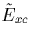

Next:
List of Published Papers
Up:
Chris Ewels' PhD Thesis
Previous:
Acknowledgements
Contents
Contents
List of Tables
List of Figures
Introduction
Theoretical Background
The Hartree Equations
Hartree-Fock Theory
Discussion
Thomas-Fermi Theory
Density Functional Theory
The local density approximation
Parameterising the correlation energy
Kohn-Sham Theory
Discussion
Pseudopotentials
Generating pseudopotentials
Other theoretical approaches
Semi-Empirical Hartree Fock
CNDO
Interatomic Potentials
Use of the Musgrave-Pople potential in this work
AIMPRO methodology
Expanding the Wavefunction
Approximation to the charge density
Spin averaged  and improvements to the approximations
Spin polarised exchange correlation
Summary so far
Matrix Formalism
Self-consistency
Fermi statistics and `level smearing'
Evaluation of Forces
Structural Optimisation
Calculation of Vibrational Modes
Induced Dipole Moments
Discussion of the methods used in AIMPRO
Density functional theory / Local Density Approximation
Real space
Clusters
H termination
Gaussian orbitals
Bond centred Gaussian fitting functions
Application of AIMPRO to the oxygen in silicon problem
Hydrogen in III-V materials
Background
Electrical effects and the role of Fe
Group II impurities in InP
Method
Pure InP
Hydrogenated Vacancy Centres
Passivation of Group II Impurities
Varying acceptor and host - InP, GaAs, Be and Mg
Conclusions
Vacancy - Oxygen complexes in Silicon
Introduction
The VO Centre
The formation of VO
2
Higher order VO
n
defects
Method and Results
The VO Defect
The VO
2
Defect
Alternatives to VO
2
- the V
2
O Defect
The VO
3
Defect
The OV-O
i
pre-cursor to the VO
2
centre
Discussion
Oxygen-Oxygen defects
Background
Interstitial Oxygen
The oxygen dimer
The 1012 cm
-1
LVM
Method
Orthogonality Constraints
Constraining Bond Lengths
Interstitial oxygen
The oxygen dimer
The symmetric dimer
The split dimer
Dimer Migration
Dimer Formation
Experimental Evidence
Dimer interaction with other defects
Trimer formation
Theoretical Results
Conclusions
Nitrogen-Oxygen defects in Silicon
Method
Background
The N
i
defect
N
2
i
O - The dominant N-O defect in silicon
Experimental Work
Theoretical Work
N
i
O
i
- pre-cursor to STDs and the NNO
Alternative Models - NNOO
Conclusions and Discussion
Shallow Thermal Donors in Silicon
Background
Method
N
i
O
2
i
- The N-O Shallow Thermal Donor
Other potential STD models
(N
2
i
)
n
-O
i
- Suezawa's model
Substitutional Nitrogen
Bistable NNO structures
Formation processes for N-O defects
(C-H) based shallow thermal donors
(C-H)
i
O
2
i
Identification of NL10
(CH)
i
-O
4
i
and the `pop-out' mechanism
Experimental Background
Results
Summary of (CH)-O
ni
defects and further work
The Wonderbra Mechanism--
Deep to Shallow Donor Conversion
Discussion and Future Applications
Thermal Donors in Si
Experimental data on the thermal donors
EPR and ENDOR
Stress-induced alignment experiments
FTIR
Other information
Previous theoretical models
Results
The 4 O di-y-lid thermal donor
Discussion of the di-y-lid model
Hydrogen passivation
Other models
The 5O
i
Thermal Donor
Alternative 4O
i
structures
The `flanked square' structure
The di-square structure
Three O atom TD species
Snyder-Stavola model
Partially dissociated 3O model
Six oxygen atom TD species
Al in the di-y-lid core - NL10(Al)?
Y-lids - Tri-valent oxygen
The role of silicon self-interstitials
Earlier Thermal Donors - O
i
to TD3
Di-y-lid is TD2 - a serial process
Di-y-lid is TD3 - a parallel process
General discussion of early stages of TD formation
Early Stages - Summary
Later Thermal Donors - TD3 and beyond
1D thermal donors
2/3D thermal donors
Later TDs - Summary and Conclusion
Conclusions and Further Work
References
Chris Ewels
11/13/1997